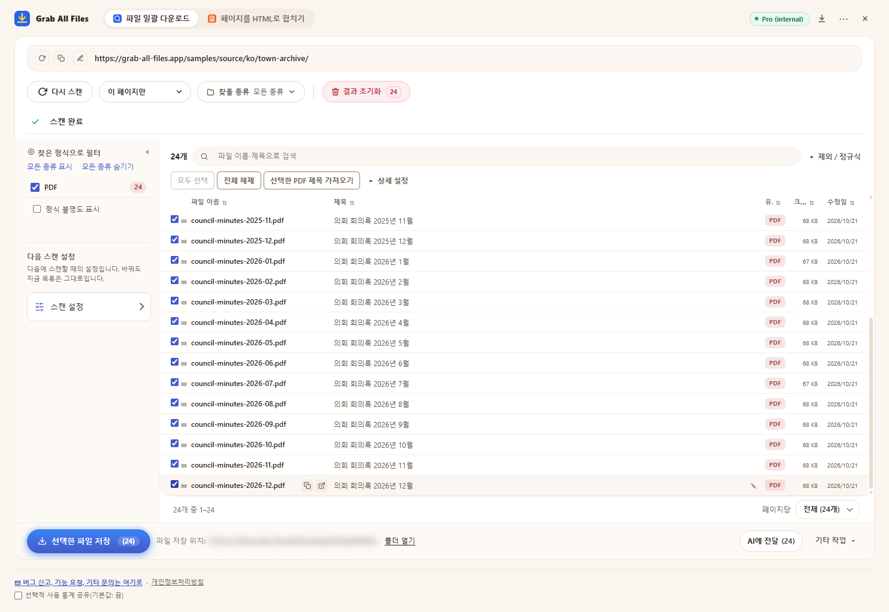

Grab All Files의 실제 출력 결과
PDF 24개를 한 번에 내려받기(Pro)
가상의 마을 의회 회의록 보관함(2025년 1월부터 2026년 12월까지 매월 한 건, PDF 24개)을 스캔하고 모든 PDF를 선택해 한 번에 저장했습니다. 무료는 한 번에 최대 10개까지 저장하므로 세 번에 나누어야 하지만, Pro에는 다운로드당 제한이 없습니다. 파일 이름은 확장 프로그램이 각 PDF의 제목을 보고 붙였습니다.
출력 파일
- 의회 회의록 2025년 1월.pdf
- 의회 회의록 2025년 2월.pdf
- 의회 회의록 2025년 3월.pdf
- 의회 회의록 2025년 4월.pdf
- 의회 회의록 2025년 5월.pdf
- 의회 회의록 2025년 6월.pdf
- 의회 회의록 2025년 7월.pdf
- 의회 회의록 2025년 8월.pdf
- 의회 회의록 2025년 9월.pdf
- 의회 회의록 2025년 10월.pdf
- 의회 회의록 2025년 11월.pdf
- 의회 회의록 2025년 12월.pdf
- 의회 회의록 2026년 1월.pdf
- 의회 회의록 2026년 2월.pdf
- 의회 회의록 2026년 3월.pdf
- 의회 회의록 2026년 4월.pdf
- 의회 회의록 2026년 5월.pdf
- 의회 회의록 2026년 6월.pdf
- 의회 회의록 2026년 7월.pdf
- 의회 회의록 2026년 8월.pdf
- 의회 회의록 2026년 9월.pdf
- 의회 회의록 2026년 10월.pdf
- 의회 회의록 2026년 11월.pdf
- 의회 회의록 2026년 12월.pdf
PDF 24개를 선택한 확장 프로그램 화면, 저장 직전(저장 위치는 흐리게 처리함)

만든 방법
- 원본 페이지
- /samples/source/ko/town-archive/
- 확장 프로그램
- Grab All Files 5.8.31
- 브라우저
- Chrome 156.0.8078.48 (Windows 11)
- 요금제
- Pro
- 작성일
- 2026-10-28
- 설정
- 링크 깊이: 이 페이지만
- 파일 형식: PDF만
- 선택한 파일: 24개
- 저장 위치: 브라우저 다운로드 폴더(GrabAllFiles 폴더)